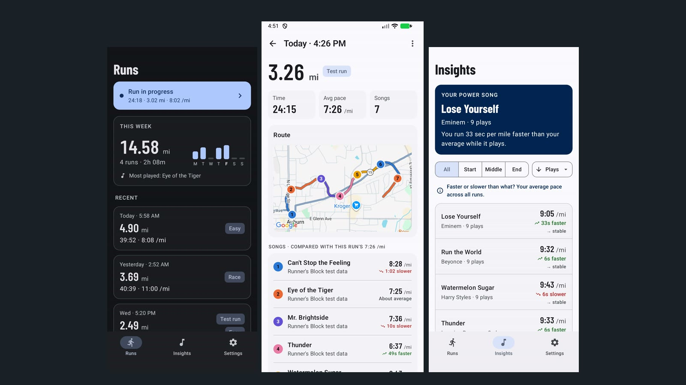

ClaudesFactory
Claude plays Satisfactory by itself through a custom game mod and a 74-tool MCP server, live on Twitch for days at a time.
Senior Android Engineer · Atlanta
I build what people need at work, and I build what I want at home. Six years of Kotlin at Chewy, NCR, Ditto and BridgeView: Jetpack Compose, Coroutines and Flow, modular architecture, Kotlin↔Rust interop.
Things I've built on my own time.
Claude plays Satisfactory by itself through a custom game mod and a 74-tool MCP server, live on Twitch for days at a time.

A run tracker that finds the songs that make you run faster: it matches your GPS pace to whatever's playing in any music app and ranks your music.